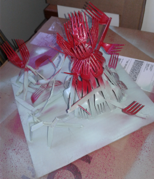

Multiples Project
Still image of a project I recently finished.
Satisfactory and logistics game -- 4/18/2021
Something you'll come to realize very quickly if you visit this page on occasion is that I've clocked in far more hours than are probably considered reasonable with video games over the course of my 20 odd years of memorable consciousness. If there's a couple of things I've come to appreciate, it's the feeling of your entertainment respecting your time and people being able to write out a cohesive statement as to why they like/dislike something. It occurs to me that while I can't exactly materialize the former in every piece of media I might wish to, I can at least be the change that I want to see and try to write some thoughtful analyses of games that I think could use some talking about. Or just run off on a hotblooded tirade, who knows.
[Click the title to read the rest on the Journal page.]
Low health gif
This was actually an accident. I mistakenly thickened the black borders on one frame, and that added tension. I enjoy it.


Oops!
Not enough content here yet! Here's a placeholder video of a project of mine. Click "Oops!" to see the About page.